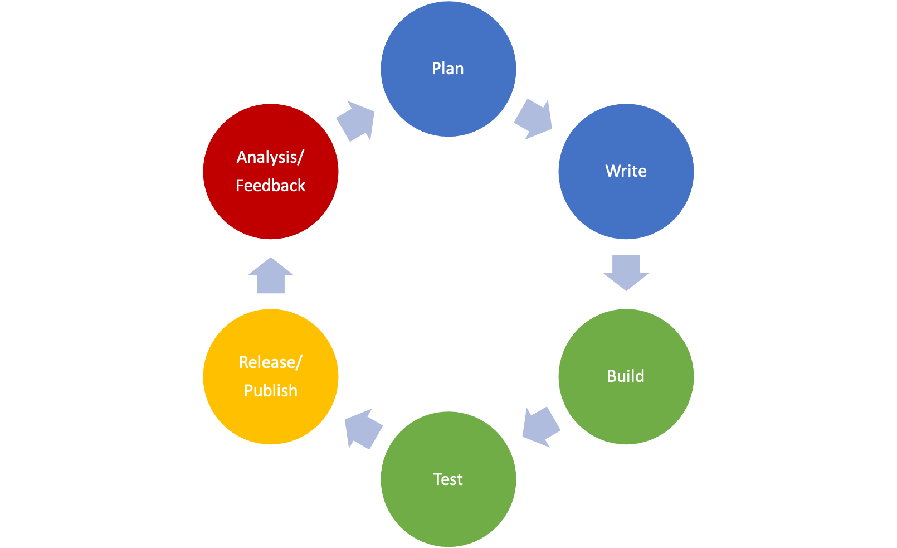

DocOps¶
author: Jodie Putrino & the Write the Docs community
What is DocOps, anyway?¶
Along with the advent of Docs as Code, the technical writing community has seen the growth of a new specialization called “DocOps” (or “doc-ops”).
But what does DocOps actually mean, and who actually “does” DocOps?
This subject came up for discussion during an Unconference session at the Write the Docs (WTD) North America conference in 2021 in Portland. This page represents some of the ideas presented during that session.
Generally speaking, “DocOps” is like DevOps. Instead of applying broadly to software development, though, DocOps specifically applies to the creation, management, and release of documentation.
Going from the DevOps definition provided by Atlassian linked in the previous paragraph, then, we could loosely define DocOps as:
“a set of practices that works to automate and integrate the process of developing documentation across engineering, product, support, and, of course, technical writing teams.”
Just like DevOps, DocOps also emphasizes collaboration and continuous improvement. Below, we’ve adapted the traditional DevOps lifecycle diagram to represent DocOps:

Who practices DocOps?¶
To answer this question, it might be best to examine the responsibilities that a DocOps practitioner or team might have.
- Selecting and providing support for tools used to produce documentation – markup language, static site generator (SSG), hosting provider, etc.
- Defining processes and established ways of working, including where docs fit into agile or other development methodologies.
- Defining documentation priorities and deliverables
- Providing training to authors to enable contribution to the docs
- Managing content
- Building and maintaining a theme for an SSG
- Modeling and implementing product versioning strategies as they pertain to documentation
- Creating and maintaining build scripts
- Keeping the barrier to entry for making docs low to make contributing easy and (dare we say it?) fun
This is by no means an exhaustive list. If you have responsibilities that overlap with or incorporate some of these, then you may be a DocOps practitioner.
It’s also important to note that while DocOps tends to be associated with docs-as-code, it’s not a requirement. You might use DITA, a CMS, a wiki, etc.; if you’re involved in the areas listed above, regardless of tool set, there’s a good chance you might be DocOps!
DocOps resources¶
If you’re interested in DocOps, join the conversation in the Write the Docs Slack #docops channel!
- CA Technologies was among the first to publicly use the term “DocOps” to describe their approach to technical content
- Chris Noonan presented on the “Rocky Road to DocOps” at WTD Europe in 2020
- Doc Tool Hub provides a curated list of DocOps-related articles and blog posts.